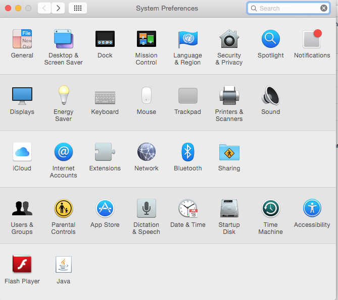

Recommended Macbook Preferences Settings for MyITLab
Change
keyboard to accept F1-F12 function keys like they do in Windows.
Using Chrome,
changing the mouse or trackpad settings, and changing the Function settings
under keyboards will eliminate most of the compatibility problems for Macs for
running MyITLab.
***To select
multiple non adjacent cells, check
MyITLab FAQ
Q#11 3rd row for an alternative solution.
Here are screenshots of the settings for an example
1. Go to System Preferences and select Mouse or Trackpad

2. Keep Scroll
direction: natural and keep Secondary click(this allows Macs to have right click
function like Windows), then deselect Smart zoom and move tracking to slow
3. click on
More Gestures and deselect all extra functions
4. Go to
keyboard in System Preferences and select Use all F1,F2, etc keys as standard
function keys to have F1-F12 keys work like Windows function keys